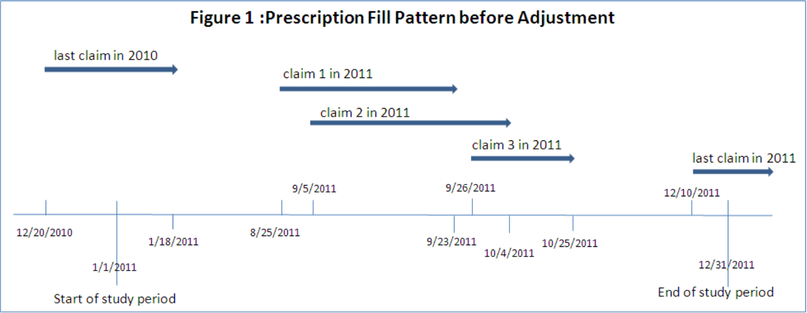
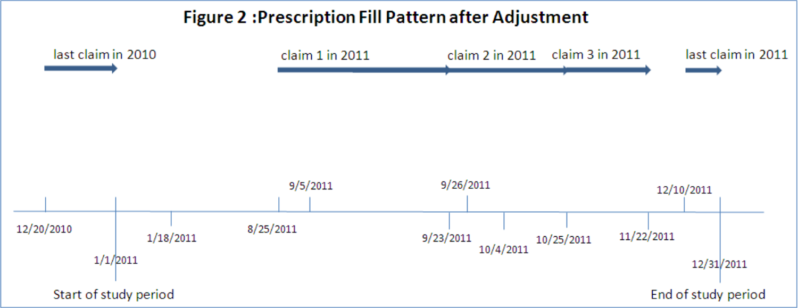
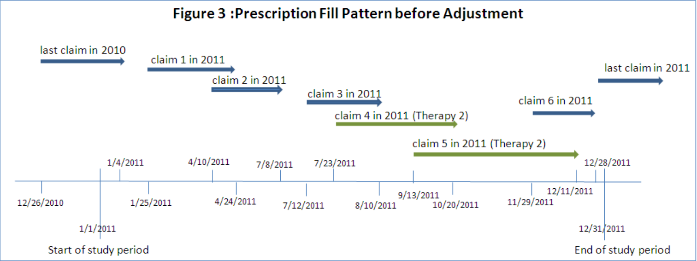
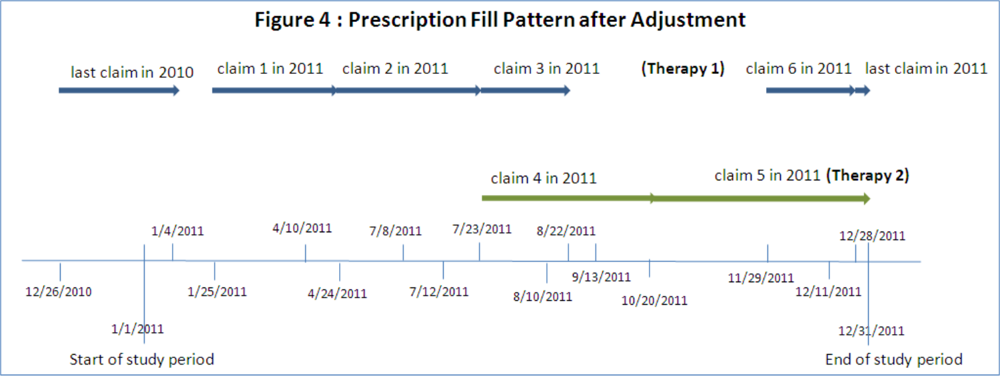

Python, Parallelism, and Medication Adherence
Medication Adherence
Medication adherence is a pretty big deal in healthcare. It turns out if you don’t take your medicine, it probably won’t do you much good. It also turns out that many people won’t take their medicine, for a variety of reasons. Primary non-adherence is one of the biggest unsolved problems in medicine, for which I offer no further solution here. But, you know, VC disruptor types take note.
If you can convince somone to fill their first prescription, though, then you can start to get some traction on understanding if patients are taking their medication as directed by checking whether they refill their prescription on time. This is the current gold standard, though there are some efforts around using IoT pill bottles, surveys, or other such approaches to improve on it. None have really caught on yet, mostly due in my opinion to the costs. It’s hard to sell a $200 pill bottle, even if it would save money in the long run.
While there are several different metrics for measuring adherence, the one most US accreditation agencies have settled on is Proportion of Days Covered (PDC). Several times in my career I’ve been asked to measure PDC for anywhere from dozens to hundreds of thousands of patients, as part of securing accreditation for my employer. Obviously this needs to be done programmatically, as Excel-grinding your way through claims data at that scale just doesn’t work.
Finally, if you’re reading this because you’re a healthcare analyst trying to figure out how to do this so your org stays accredited, the most comprehensive FOSS package for medication adherence is currently AdhereR. Anyone looking for a broader coverage of the topic would be well served to give them a look. They and offer a variety of adherence metrics and visualizatons, while my software is designed to be simpler to use, python-native, and offers a stricter focus on PDC. They built a car, I built a bike, but I quite like my bike so I’m going to tell you about it.
PDC
So, let’s talk a little bit about PDC. First off, my favorite paper for understanding and implementing PDC calculations. It explains the nuts, bolts, and challenges of PDC pretty well. I’ll be using their Prescription Fill Pattern figures and borrowing some of their explanations for this article, as they are the best I know of. The paper also includes SAS code for calculating PDC, which may prove useful if your organization pays for SAS licensing already.
So, at first glance ‘proportion of days covered’ is a pretty straightforward metric. You count the days a patient is on their medication, you count the days in your study, and you divide. Simple, right? Generally, yes! There are, however, three nuances that need to be addressed.
Early Refills
One of the quirks of medication is that you usually don’t want to wait until someone is completely out of their medication to give them more, because a gap in treatment is often a really bad thing. People’s calendars are messy, and erring late is bad, so frequently you just refill early. Now this means that the math for coverage is no longer as simple as ‘day you got the pills’ + ‘number of pills’ to know when you run out, you also need to account for how many pills were left over from the previous dose, and keep track of these overlaps in coverage. While there are a few ways to do this, the most commonly used (probably because it’s the one SAS code was published for, let’s be real) is to shift the date of fill for early refills. This looks like so: 

Multiple Therapies
Another quirk of medication is that it doesn’t work the same way for everyone, and sometimes people need to try a couple before they find one that helps. If a patient has switched therapies or used multiple different medications to treat a condition, you need to account for the overall ‘coverage’ of the combined treatment. Also, you need to be mindful that fills of one drug shouldn’t be handled the same way as early refills of the same drug, you have to shift fill dates and handle overlaps in coverage for each drug separately. Pictures being worth many words, in short it looks like so: 

Denominator Woes
The final nuance of adherence calculations is that usually you’re trying to calculate this for hundreds or thousands of people across a fixed timeframe. If your organization wants an “adherence” number for 2019 so they can keep doing business with Medicare, they need to figure out what to do with patients that had their first dose in June. You can’t really say that patient wasn’t adherent in February, they probably weren’t supposed to be taking any medicine then! This is usually handled by starting the clock on the first medication fill for each patient, and stopping the clock on the last fill. This means you don’t get credit for if that patient was adherent for their last fill, but you also don’t take blame for anything before they entered your care. This is generally the “fairest” way to calculate this in aggregate, and is what most accreditation agencies require.
PDC in Python
Ok, so we’ve talked about healthcare and math, let’s get to the tech stuff. I wrote a Python package to calculate this, and will talk through how it works here. PDC is kind of my ‘hello world’ when learning a new programming language, but this is the first time I’ve been both willing and able to publish my code publicly. The R and SAS versions aren’t open-source-able but I may add a link to a Rust/Nim/whatever implementation of this same code in a future update to this article, as I play with new languages.
I made heavy use of the Pandas and Numpy libraries, to intake patient claims data and iterate through it. As of right now, my propdayscov package consists of a single public function, calc_pdc, which takes some paramaters and a Pandas dataframe, and returns a dataframe with member-level PDC values.
Creating a dataframe with these fields is left to the reader, but Pandas offers both read_csv() and read_sql() functions that I strongly recommend as good starting points. The fields you’ll need in your dataframe to calculate PDC are:
- P_ID - A unique patient identifier. Format = STRING
- DRUGNAME - The name of the drug being filled. Generic name, per usual PDC requirements. Format = STRING
- FILLDATE - The date of the fill being dispensed. Format = DATE
- DAYSSUPPLY - Days of supply being dispensed at fill. Format = INTEGER
- MBRELIGSTART - First date of coverage eligiblity for patient. Per URAC, can be set to first known date of fill if eligibility records are not available. Format = DATE
- MBRELIGEND - Last date of coverage eligiblity for patient. Per URAC, can be set to last known date of fill if eligibility records are not available. Format = DATE
The dataframe you’ll get back can be exported using Pandas to_csv(), to_excel(), or any number of other functions. The fields you’ll get back are:
- P_ID - A unique patient identifier, as provided in input. FORMAT = STRING
- *DRUGNAME - The name of the drug being filled, as provided in input. Optional column, only output if druglevel parameter is set to “Y”. FORMAT = STRING
- COV_DAYS - The number of unique days of drug coverage, after shifting coverage to accommodate early refills. FORMAT = INTEGER
- TOT_DAYS - The total number of days in patient analysis window. Set to 0 if days of coverage is 0. FORMAT = INTEGER
- PDC_RATIO - The patient’s PDC ratio, calculated as COV_DAYS / TOT_DAYS. Set to 0 if days of coverage is 0. FORMAT = FLOAT
Paralellism
So, the actual code was pretty simple and given that this was the third time I’d solved this problem I wanted to add something a bit more interesting. Member-level calculations across a large patient base is a highly parallel problem, and I hadn’t played with multithreading much yet. Parallelism and concurrency are big interests of mine at the moment, as scaling and speed both already demand them and they will only become more vital in the post-Moore era.
I decided to take the core “shifting and PDC” logic and parallelize it, so that multi-core machines can run the program faster. The first challenge I ran into is that Python doesn’t really do multithreading very well. The Global Interpreter Lock means that, in general, each Python process only gets one thread. Just like that, multithreading was out. Undeterred, I dug around and found the multiprocessing module, which allows the developer to spawn multiple python processes and pass work and data to each of them. This has a few challenges associated with it, but also some really excellent syntactic sugar around it. Let’s look at both.
The biggest challenges are sharing data between processes, and the overhead of starting up and tearing down an entire Python process for each worker you want to spawn. The overhead is somewhat unavoidable, the only solution here is to load multiple steps into each parallelized component, so that you don’t pay the overhead multiple times. This results in somewhat overloaded functions, but does save significant run time. This is probably the clearest argument I’ve found for moving to another language for tasks where speed really matters. If you can’t get that shiny new 32-core Threadripper out of first gear without paying this kind of penalty you’re probably not a happy developer.
Sharing data between parallel processes isn’t a problem unique to Python, any time you want to hand off data to worker processes or threads you need to think about how. In my case my input dataframe can be several million records, sometimes upwards of a GB of data. Obviously I don’t want to duplicate that into each process, so I wrote a helper function to efficiently chop up the input dataframe into smaller dataframes, one per member.
# parse each patient's data into a list of separate dataframes
mbr_data = [x for i, x in indata.groupby(["P_ID"], sort=False)]
Now, the syntactic sugar that Python’s multiprocessing module offers, pool.map(). This little gem means that I can call a subfunction holding all the actual PDC logic, and either map() it across all those little member-level dataframes I just made using a pool of worker processes, or directly in the traditional single-threaded paradigm, in exactly the same way! No futzing around with wait()ing and join()ing. In either case I can concatenate the resulting dataframes back into a single output dataframe and return that from the parent function. It honestly feels a bit like cheating.
if mprocmode == "Y":
# paralellizable subfunction for calculating PDC for each member
with multiprocessing.Pool(processes=workers) as pool:
pdc_ratios = pd.concat(pool.map(_covdayspart, mbr_data))
else:
pdc_ratios = pd.concat(map(_covdayspart, mbr_data))
That’s all there is to it! As noted elsewhere in my website healthcare data science is frequently of a very practical nature, not a lot of frills. This example is no exception, but I hope it proves useful for you!
If you’ve read this far, thank you! Please feel free to email me with any corrections, concerns, or ideas for similar code/measures/articles you’d like to see me write about!
PDC in Rust
I went ahead and ported this to rust as a way to get more comfortable in the language. I went with CLI and CSV in/out to do something different (more of a standalone tool, less of a library). I used serde for passing the CSV file format in/out of my code, it’s excellent. I used Rayon multithreading for concurrency, and holy cow is that library just an absolute superpower. I cannot recommend it enough.
Overall, I found rust to be a good deal simpler for this project, which I was not expecting in the slightest. Also, the rust version performs about 2 orders of magnitude faster than python, which isn’t a surprise but is worth mentioning. I am increasingly a fan of the language, y’all should check it out.